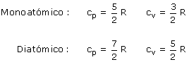

|
cp (Calor molar a presión constante) Es la cantidad de calor que debe intercambiar 1 mol de gas para aumentar su temperatura en un grado, manteniendo constante la presión cv (Calor molar a volumen constante) Es la cantidad de calor que debe intercambiar 1 mol de gas para aumentar su temperatura en un grado, manteniendo constante la presión cp y cv solo dependen de la cantidad de átomos que tiene la molécula del gas  Relación de Mayer cp - cv = R Coeficiente adiabático γ = cp / cv |